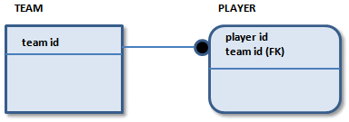
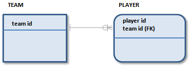

In IDEF1X notation, the type of the relationship that connects two entities enforces the concept of dependent and independent entities. If you want a foreign key to migrate to the key area of the child entity (and create a dependent entity as a result), you can create an identifying relationship between the parent and child entities. A solid line connecting the entities indicates an identifying relationship. In IDEF1X notation, the line includes a dot on the end nearest to the child entity, as shown in the following figure:

In IE notation, the line includes a crow's foot at the end of the relationship nearest to the child entity:

Standard IE notation does not include rounded corners on entities. Rounded entity corners are an IDEF1X symbol included in IE notation to help ensure compatibility between methods.
There are advantages to contributing keys to a child entity through identifying relationships, such as making some physical system queries more straightforward. However, there are also many disadvantages. Some advanced relational theory suggests that contribution of keys not occur in this way. Instead, entity identification is attained through using a logical handle or surrogate key that the system user does not see, in addition to the entity's primary key. Data architects who are interested in this relational theory are encouraged to review the work of E. F. Codd and C. J. Date.